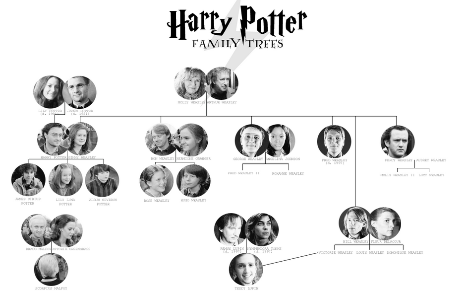
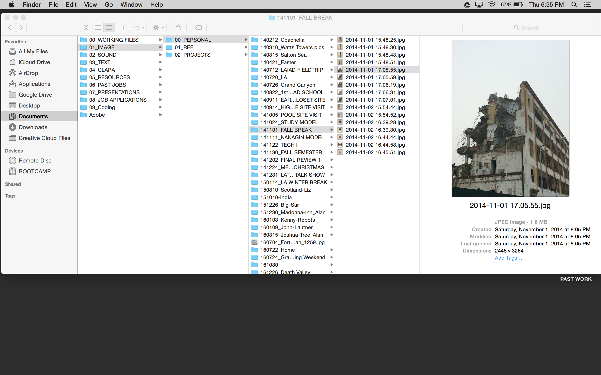
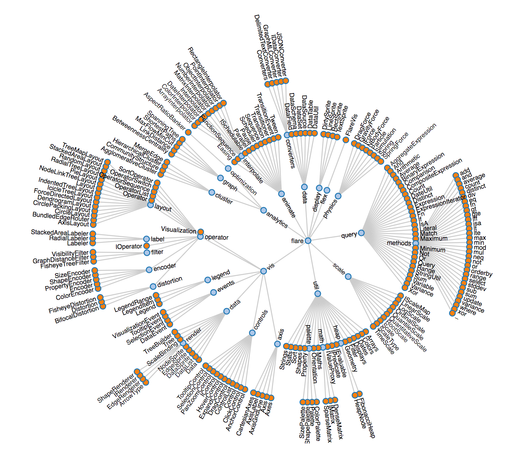
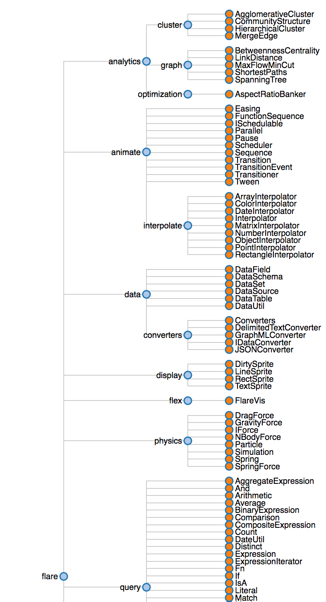
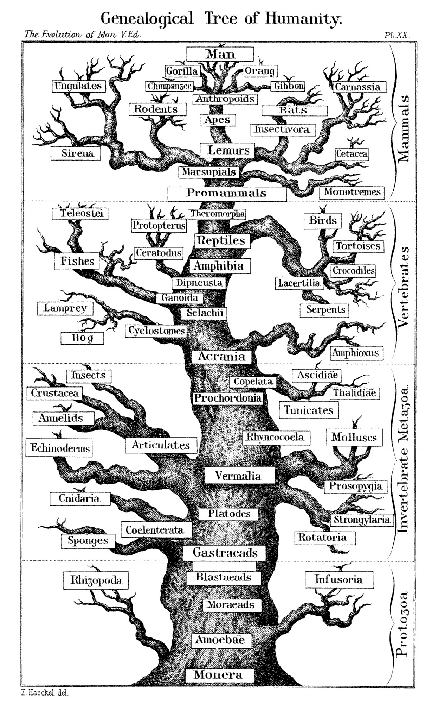
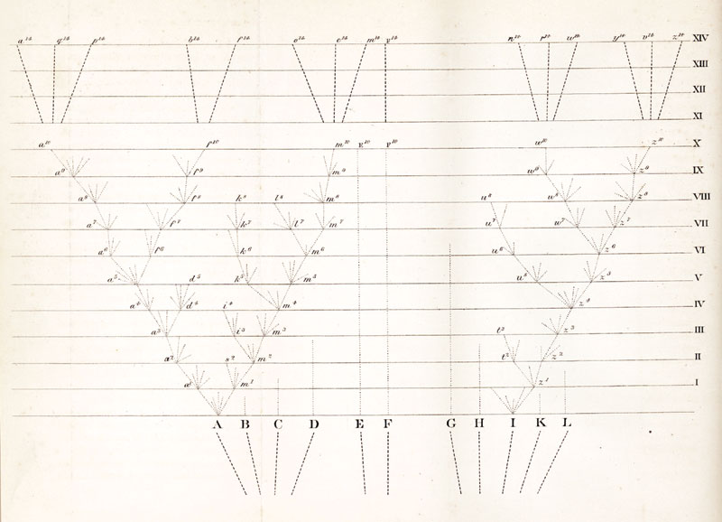
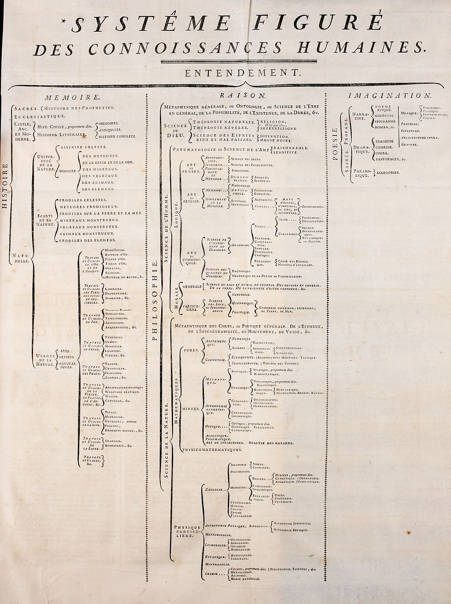

The node link tree is a way of visualizing data that has hierarchical relationships. Some common examples are family trees (fig. 1) and phylogenetic trees - aka evolutionary trees (fig. 2). Other familiar data that has natural hierarchies that can be visualized using node link trees are governmental spatial categories like states, counties, cities, and neighborhoods; command structures (fig.3); even our file folders in our computers (fig. 4).
fig. 1
fig. 2

fig. 3
fig. 4

The jargon used to refer to the different elements within the diagram borrows words and concepts from wooded foliage and language from kinship terminology. For example, the tree has a root, which is the node that begins the tree. The branches of the tree are the links that connect the nodes. The nodes that do not link to another node are leaves. All leaves are children of the previous node they are connected to, which is alternatively called their parent.

To build a tree node link, you need to identify your root and start building out from it. You can orient it radially or linearly (fig. 5). While you can use data from an excel spreadsheet, the information needs to be, it is important to identify the hierarchy of the categories, as the column and row representation of excel will not make these hierarchies visible.
fig. 5
 This type of data visualization shows relationships and hierarchies between data, so it is most useful for data for which these relationships are pre-existing. Not all information has a hierarchical system.
The earliest uses of this visualization were used by Ernst Haeckel, German Naturalist, in his book Evolution of Man (1879) (fig. 6), Charles Darwin in the only sketch he produced for On the Origin of the Species (1859) (fig. 7), and for the table of contents in the original Encyclopédie, published during the Enlightenment in France between 1751 and 1772, edited by Denis Diderot (fig. 8).
fig. 6
fig. 7
fig. 8
